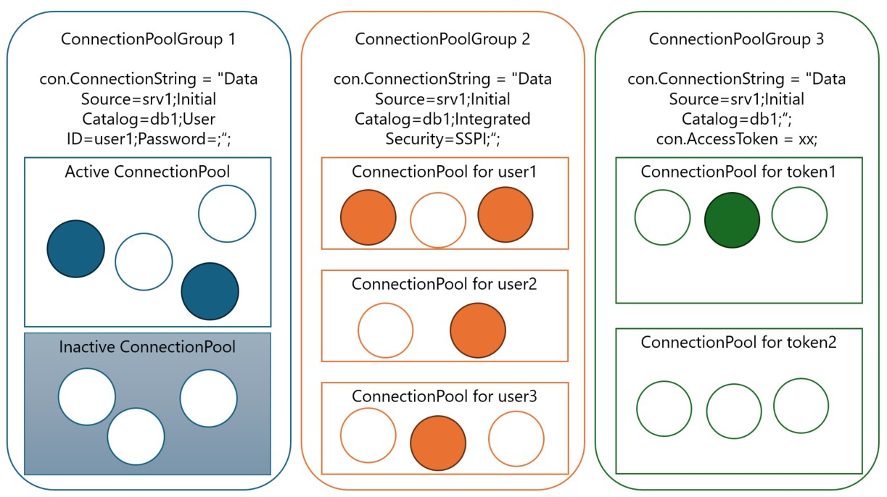

こんにちは、Japan Developer Support Core チームの高橋です。SQL Server にアクセスする処理を持つアプリケーションに関するご相談の中で、接続プール（Connection Pooling）の誤解が原因になっているケースは少なくありません。この記事では、ADO.NET における SQL Server 向けデータ プロバイダーで使用される接続プールについて、アプリ開発者 / 運用担当者が押さえておくべき "誤解されやすい点" を中心に整理します。
対象範囲
- 対象：System.Data.SqlClient / Microsoft.Data.SqlClient による SQL Server 接続の接続プール
- 対象外：ODBC（System.Data.Odbc） や OLE DB（System.Data.OleDb）
これらは .NET 側の実装ではなく、ODBC Driver Manager / OLE DB Services 側で実装されている接続プール機能が動作します。挙動も観測手段も異なるため、本記事の対象外とします。
参考（公式ドキュメント）： SQL Server の接続プール (ADO.NET)
https://learn.microsoft.com/ja-jp/sql/connect/ado-net/sql-server-connection-pooling?view=sql-server-ver16
接続プールに関してよくある誤解
誤解 1：接続プールは SQL Server 側にある？
正: 接続プールはクライアント アプリケーション プロセス内にあります。SQL Server 側の機能ではありません。
接続プールとは、一度確立された接続を切断せずに維持する (プールする) ことにより、後続の接続要求においてそのプールされた接続を再利用し、接続処理に要するコストを最小限にするための機能です。接続要求を行うのも接続の切断の要求を行うのも基本的にアプリケーションであり、その接続を受け付けるデータベースシステム側ではありませんので、このように接続の維持や再利用などの仕組みはアプリケーション側に必要なものと言えます。したがって接続プールの機能はアプリケーション プロセス内に用意されています。
ADO.NET により SQL Server にアクセスする場合、System.Data.SqlClient 名前空間、および、Microsoft.Data.SqlClient 名前空間で提供されるデータプロバイダーを使用できますが、これらにも接続プールの機能が用意されており、SqlConnection クラスの Open() メソッドによる接続においては、既定で使用されます。(既定で接続プールが有効化されます。)
このようにアプリケーション プロセス内に接続プール機能があることから、運用・調査の観点においてもし「プールの利用状況を見たい」場合には基本的にクライアント環境で監視することになります。そして、SQL Server 側では接続プール自体の利用状況の把握はできません。ただし、確立済みの接続についての接続元ホスト/プロセス/ユーザーなどの情報を動的管理ビュー (DMV) を使用して把握することはできますので、接続プールそのものではなく、接続状況の把握のための補足情報として活用できます。
誤解 2：同じ接続文字列なら、同じ接続プールが使われる？
正: 接続プールからの接続の再利用は "接続文字列が完全に一致していること" が条件となりますが他にも条件があるため、別の接続プールとなる場合もあります。
公式ドキュメントにもある通り、接続は次の単位でプールされます：
- プロセスごと
- アプリケーション ドメインごと
- 接続文字列ごと (完全一致が必要)
- 統合セキュリティ (Windows 認証) の場合は Windows ID ごと
- Microsoft Entra ID 認証 の場合は アクセス トークン ごと
反対に言えば、次のようなケースでは接続プールからの再利用は行われないということになります。
- 同じ SQL Server にアクセスし、クライアントマシン上で動作するアプリケーション プロセス A と B
---> プロセスが異なるため A と B の間で接続が共有されることはありません。 - 同じ Web サイトに登録され、同じアプリケーション プールを使用するよう構成された Web アプリケーション A と B
---> アプリケーション ドメインが異なるため A と B の間で接続が共有されることはありません。 - SQL Server へのアクセスに Windows 認証を使用し、複数ユーザーがアクセスするサービス アプリケーション
---> ユーザーごとに接続プールが分かれるため、ユーザー1 による処理終了後、ユーザー2 による処理では、ユーザー1 が使用した接続は再利用されません。ユーザーによる SQL Server 側の権限の相違などの観点からも妥当ですね。 - 接続の都度アクセス トークンを取得するアプリケーション
---> 毎回異なるアクセス トークンを使用するため、先行のプールされた接続を後続で再利用できません。
誤解 3：2 回目以降の接続要求ではいつでも既存接続が再利用される？
正: 再利用の前提は "前回使った接続がプールに戻っていること" です。接続プールに戻っていない接続は再利用されません。
SqlConnection.Open() による接続確立後、Close() (または Dispose()) することで接続プールに戻り、後続の SqlConnection.Open() で再利用可能となります。言い換えれば、Close() していない接続は、いくらクエリ等の一連の処理を完了していても接続プールには戻らず使用中の状態と位置付けられるため、後続の SqlConnection.Open() で再利用されることはありません。そのため Close() 漏れがあると、結果として新規接続要求の都度、接続数が増えることになります。
Close() 漏れの弊害：
- 一定時間アプリが稼働すると、接続処理でのタイムアウト エラー (*) が発生しやすくなる。
- SQL Server 側では接続数の増加傾向が見られる。
(*) 古いブログですが、この見出しにあるようなエラーが発生する可能性があります。
「タイムアウトに達しました。プールから接続を取得する前にタイムアウト期間が過ぎました。プールされた接続がすべて使用中で、プール サイズの制限値に達した可能性があります。」エラーの対処方法
推奨される対策：
using(await using) でSqlConnectionを確実に破棄する。- 例外時に
Close()が飛ばない構造(try-finally がない等) を避ける。
誤解 4：Connection Lifetime (LoadBalanceTimeout) は "時間になったら即破棄" する設定？
正: "接続が接続プールへ返却されるタイミング" でプールに戻すか破棄するかの判定に使用される "閾値" の設定です。
接続プール内に存在する接続のクリーンアップのタイミングを制御したく Connection Lifetime (LoadBalanceTimeout) にて時間を指定するユーザーもいますので、ここでは接続プールのクリーンアップ処理について説明します。
接続プール内の接続のクリーンアップにおける基本動作としては、再利用可能な状態となってからの経過時間が関係することを把握しておきましょう。具体的には、再利用可能となってから再利用されないままおおよそ 8 分経過したタイミングで接続の終了 (切断) の処理が行われます。
これに加えて、Connection Lifetime (LoadBalanceTimeout) では接続がプールに 戻された時点で "接続作成日時からの経過秒" が閾値を超えている場合に破棄されるためのその閾値を設定できます。つまりこの設定は "寿命を迎えた瞬間に切断" するための設定ではなく、返却イベントを契機に破棄されるための設定と理解しましょう。
冒頭で紹介した公式ドキュメントの以下の箇所でも説明されています。
SQL Server の接続プール (ADO.NET) - 接続を削除する
利用シナリオ:
SQL Server や Azure SQL Database における認証処理においては、同一ユーザーによる接続の有効期間は 10 時間と設定されているため、仮に長時間連続稼働するアプリケーションで 10 時間前に確立された接続を再利用すると認証エラーとなります。これを避けたい場合、作成から Connection Lifetime の設定を 9 時間に設定すると、接続が接続プールに戻されたタイミングで 9 時間を経過している場合に破棄対象となりますので、10 時間を経過して使用されることがなくなります。
※Microsoft.Data.SqlClient における Microsoft Entra 認証においては Azure SQL DB 側の制限を前提とし、アクセス トークンが期限切れになった接続に関しては接続プールから再利用されないような工夫もされています。
Fix pooled connection re-use on access token expiry #635
誤解 5：接続プール内の接続は "常に有効" のまま？
正: 接続プールは、サーバーの再起動や構成変更を "先回りして検知する" 仕組みとなっていませんので、プールされている接続には無効な接続も含まれる可能性があります。
SQL Server の再起動や高可用性構成におけるフェールオーバー、Azure SQL Database の Reconfiguration 等が発生すると、既存の確立済みの接続はサーバー側で無効となります。(ログアウトなど)
このとき、接続プール内の接続がサーバー側で無効になっても、接続プールが即座にそれを検知して全接続を更新することはありません。無効であることが表面化するのは、その接続が再利用され、何らかのリクエストを送ろうとした時です。こうして無効であることが検知されて削除対象となると接続プール自体が再利用不可とされ、以降の新規接続のリクエストにおいては新しい接続プールの作成から処理されることになります。
したがって、このようなシナリオにおいては、"普段は問題ないのに、たまに最初の 1 回だけ失敗する"、"短時間に複数リクエストが並行すると複数が失敗する" といった事象が見られることがあります。
運用上の対策の方向性：
サーバー側で接続が無効となることは避けられませんので、そのようなことが発生し得るものとして、次のような対応を検討します。
- 接続エラー（ログイン失敗/切断）を try-catch などで適切にハンドリングし、再試行で回復できる設計にする。
- 再試行をするにあたっても、例外を握りつぶさず、どのステップ (接続の
Openメソッドか、コマンドのExecute**メソッドか) で例外が発生したかをログで判別できるようにする。
誤解 6：トランザクション実行中も同様に接続プールから自由に接続が再利用される？
正: 未完了のトランザクションに参加している接続は、そのトランザクション外では再利用されません。
トランザクションと接続は非常に密接です。そのため、ある接続上でトランザクションを開始し、SqlConnection.Close() によりいったん終了する場合、その接続は通常の接続プールには戻されず、このトランザクション専用の接続プールに戻されます。これにより、同一トランザクション内の後続の接続要求において同じ接続を再利用してトランザクションを継続する、もしくは、同一トランザクションに新たに接続を参加させて既存の接続に紐づくトランザクションを分散トランザクションへ昇格するといった、トランザクションによる整合性を保ちます。
このような接続は、その接続上で実行されていたトランザクションの完了 (Commit / Rollback) 後に Close() や Dispose() が実行されると通常のプールに戻され、通常の接続要求において再利用される対象となります。
接続プールの構造に関する補足情報
接続プールを監視する方法としてパフォーマンス カウンターを使用できますが、そのカウンターのうち、以下のカウンターの名前に着目してみてください。
NumberOfActiveConnectionPoolGroups/NumberOfInactiveConnectionPoolGroupsNumberOfActiveConnectionPools/NumberOfInactiveConnectionPoolsNumberOfActiveConnections/NumberOfFreeConnections
参考：ADO.NET のパフォーマンス カウンター
これらの名前は接続プールの構造を示しています。具体的には、ConnectionGroup 内に ConenctionPool が存在し、ConnectionPool 内に Connection が存在する ものとイメージしてもらうとよいでしょう。例えば Windows 認証の場合には接続文字列は同一でも接続プールは分かれると前述しました。これは ConnectionGroup が接続文字列に対して 1つ、その ConnectionGroup 内にユーザーごとに ConnectionPool が作成され、そしてそのユーザーによる同時接続数に応じて Connection (接続の実体) が ConnectionPool 内に作成されることになります。

よくあるトラブル別：最初に確認する観点
もし ADO.NET の System.Data.SqlClient 名前空間、および、Microsoft.Data.SqlClient 名前空間で提供されるデータプロバイダーを使用して SQL Server にアクセスするアプリケーションで接続プールが関係していそうな問題が見られた場合にまずは確認していただきたいことをまとめてみました。
1) 接続が増え続ける / 枯渇する
Close()/Dispose()の漏れがないか（例外経路も含む）- トランザクションを長時間保持していないか
- 接続文字列がリクエストごとに違わないか
2) たまにログイン失敗・切断が起きる（普段は正常）
- サーバー再起動 / フェールオーバー / Azure 側 Reconfiguration のタイミングと相関がないか
- エラーが
Openで起きているのか、コマンド実行で起きているのか - 失敗時に同じ接続が再利用され続けていないか (既に無効な接続を使用して再試行するロジックになっていないか)
3) "プールが効いていない" ように見える
- Windows 認証で実行ユーザーが異なっていないか
AccessTokenを都度差し替えていないか- 接続文字列の完全一致が崩れていないか（順序、空白、可変要素）
まとめ
本記事では接続プールに関して主に次のような内容をお伝えしました。
- 接続プールは クライアント側のプロセス内にある (SQL Server 側ではない)。
- 再利用の鍵は 確実な Close/Dispose と 接続文字列・認証条件の安定 が必要である
- Windows 認証は Windows ID ごと、AccessToken 方式は トークンごとにプールが分かれうる。
- 接続プール内の接続は "常に有効" ではなく、障害や再構成のタイミングで 再利用時に失敗として顕在化する。
- トランザクションは接続の再利用を制約するため、長時間トランザクションはプール観点でも要注意。
接続プールはパフォーマンス向上のための重要な機能ですが、正しく理解していないとトラブルに対する調査を進める上で余計な時間を要したり、適切な対処を見出せないといった問題に遭遇する可能性もあります。今回ご紹介した情報がそのような場面で参考になったらうれしいです。
本ブログの内容は弊社の公式見解として保証されるものではなく、開発・運用時の参考情報としてご活用いただくことを目的としています。もし公式な見解が必要な場合は、弊社ドキュメント (https://learn.microsoft.com や https://support.microsoft.com) をご参照いただくか、もしくは私共サポートまでお問い合わせください。